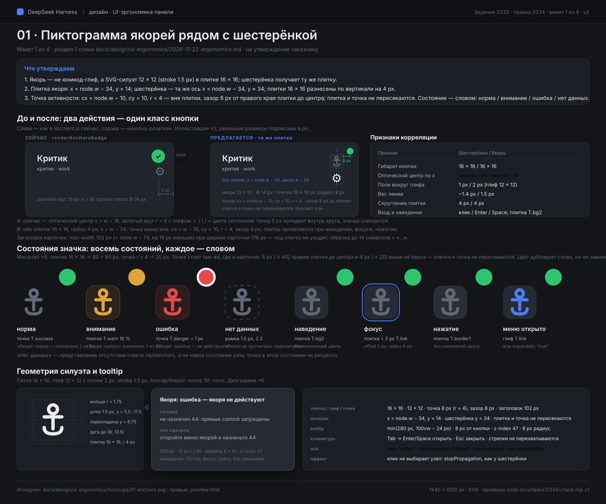
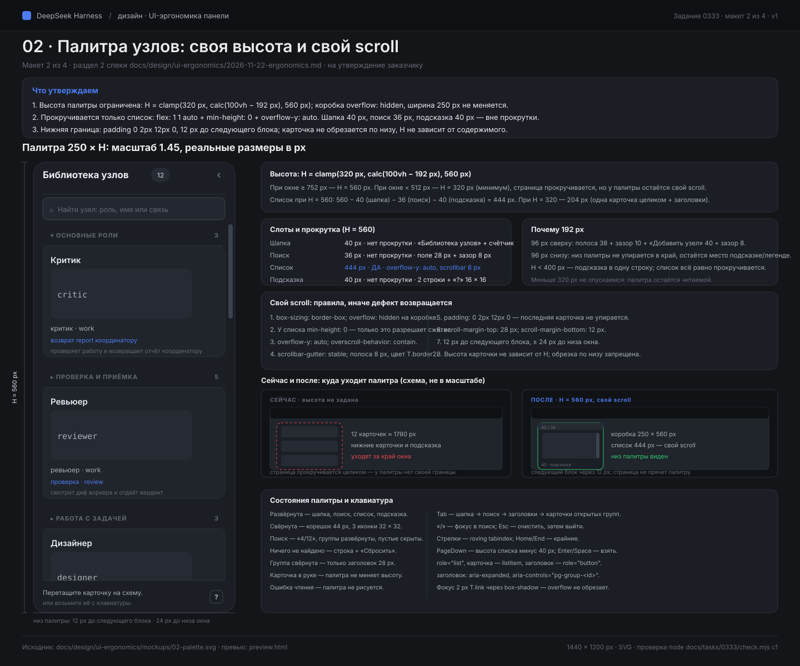
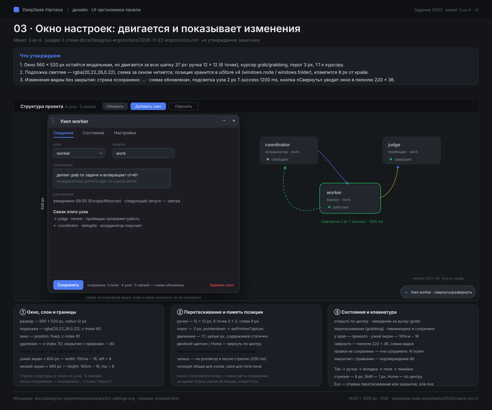
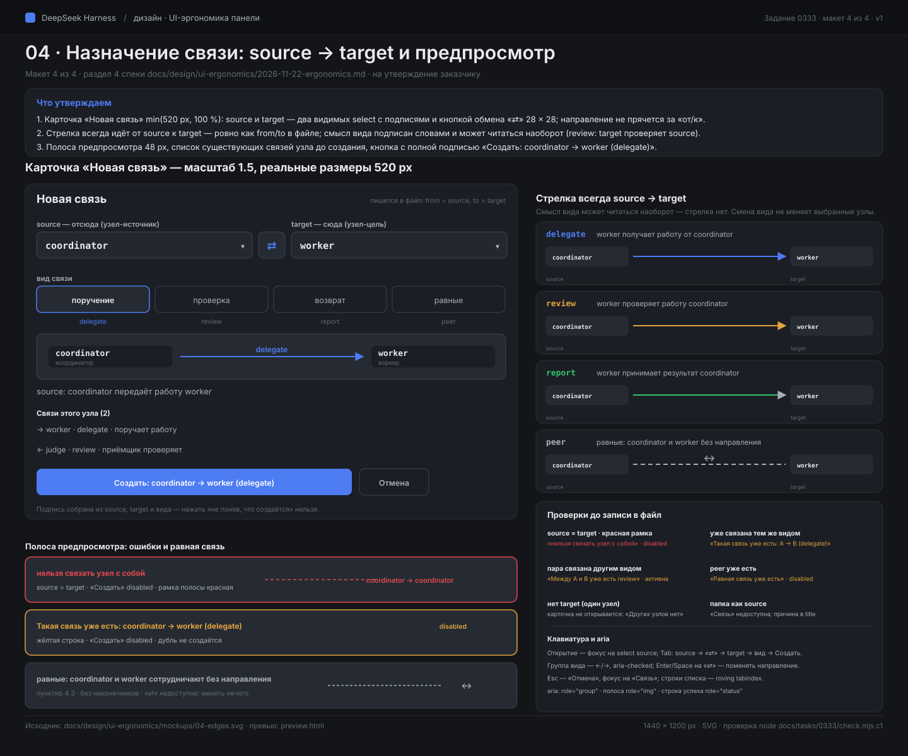

UI-эргономика панели: четыре макета на утверждение
Статические макеты к спеке docs/design/ui-ergonomics/2026-11-22-ergonomics.md: пиктограмма якорей, палитра узлов, подвижное окно настроек и карточка связи source → target. Код панели и спека не менялись.
Что утверждаем — коротко
- 01 · Якоря. Якорь — SVG-силуэт 12 × 12 в плитке 16 × 16 на оси x = node.w − 34 (шестерёнка — та же ось, y = 34); точка активности 8 px вынесена из плитки с зазором 8 px и с ней не пересекается.
- 02 · Палитра. Высота H = clamp(320 px, calc(100vh − 192 px), 560 px); прокручивается только список, у палитры своя нижняя граница.
- 03 · Окно настроек. Окно 560 × 520 px двигается за шапку; подложка 0.22, позиция в uiStore v4, изменения видны без закрытия.
- 04 · Связь. Стрелка всегда source → target; предпросмотр 48 px, список связей узла, кнопка с полной подписью.
Утвердить все четыре макета или вернуть с правками — решение заказчика; подписи «Что утверждаем» стоят у каждого макета, отклонения перечислены в конце страницы.
Что утверждаем:
- Обе кнопки — один класс «кнопка-розетка» 16 × 16 px, radius 4 px, глиф 12 × 12, поле 2 px; плитка x = node.w − 34, y = 14, шестерёнка на той же оси y = 34.
- Якорь рисуется SVG-силуэтом (stroke 1.5 px), а не юникод-глифом; шестерёнка остаётся ⚙ 14 px с той же плиткой.
- Восемь состояний: норма, внимание, ошибка, нет данных, наведение, фокус, нажатие, меню открыто — каждое подписано словом, цвет только дублирует.
- Tooltip 280 px, z-index 47; Tab → Enter/Space → Esc; зелёная точка активности 8 px (cx = node.w − 10, cy = 10, r = 4) вместо цифры/галочки и не пересекается с плиткой.

Исходник: 01-anchors.svg1440 × 1200 pxИллюстрации: ×2 и ×5, реальные размеры подписаны
Что утверждаем:
- Коробка 250 × H, где H = clamp(320 px, calc(100vh − 192 px), 560 px); overflow: hidden, ширина не меняется.
- Скроллится только список (flex: 1 1 auto, min-height: 0, overflow-y: auto); шапка 40 px, поиск 36 px, подсказка 40 px — вне прокрутки.
- Нижняя граница: список padding 0 2px 12px 0, 12 px до следующего блока; карточка не обрезается по низу.
- Липкие заголовки групп, поиск «4/12», свёрнутый корешок 44 px, roving tabindex и фокус 2 px T.link.

Исходник: 02-palette.svg1440 × 1200 pxПалитра показана в масштабе 1.45
Что утверждаем:
- Окно 560 × 520 px двигается за всю шапку 37 px: ручка 12 × 12 из шести точек, порог 3 px, 1:1 к курсору, кламп 8 px от краёв.
- Подложка светлее — rgba(20,22,26,0.22), схема за окном видна; слои 60 (подложка) и 61 (окно), удаление 70, закрытие с правками 80.
- Изменения видны без закрытия: строка «сохранено: 3 поля · 4 узла · 5 связей — схема обновлена», подсветка узла 2 px T.success 1200 ms.
- Позиция хранится в uiStore v4 (windows.node / windows.folder); «Свернуть» уводит окно в пилюлю 220 × 36.

Исходник: 03-settings.svg1440 × 1200 pxЭкран показан схематично, окно — в реальных пропорциях
Что утверждаем:
- Карточка «Новая связь» min(520 px, 100 %): два select с подписями «source — отсюда» и «target — сюда», кнопка обмена «⇄» 28 × 28.
- Стрелка всегда идёт source → target, как from/to в файле; смысл вида подписан словами и может читаться наоборот (review: target проверяет source).
- Полоса предпросмотра 48 px: чипы 132 × 24, линия 1.5 px цветом вида, наконечник у target; для peer — пунктир 4 3 без наконечников.
- Список связей узла до создания; кнопка «Создать: coordinator → worker (delegate)»; проверки дубля, self-link и peer — до записи.

Исходник: 04-edges.svg1440 × 1200 pxКарточка показана в масштабе 1.5
Файлы макетов
| Файл | Что внутри | Размер |
|---|---|---|
| 01-anchors.svg | Якорь и шестерёнка: до/после, 8 состояний, геометрия, tooltip, aria | 22.7 КБ |
| 02-palette.svg | Палитра 250 × H, слоты, правила scroll, состояния, клавиатура | 18.9 КБ |
| 03-settings.svg | Окно 560 × 520, drag-handle, подложка, позиция, пилюля, состояния | 18.3 КБ |
| 04-edges.svg | Карточка связи, 4 вида, предпросмотр, список связей, проверки | 19.3 КБ |
| preview.html | Эта страница: все 4 макета, подписи «Что утверждаем», ссылки | HTML |


T.link · действие и фокус
T.success · норма, сохранено
T.warn · внимание, дубль
T.danger · ошибка
T.tertiary · подписи
Отклонения и границы
- Макеты статические (SVG + HTML): живого приложения и скриншотов из него нет — так задано в 0333.
- Показана тёмная тема DSH. В коде цвета остаются токенами
T.*с fallback; hex на макетах — значения тёмной темы, а не жёстко заданные цвета. - В макете 01 шестерёнка нарисована юникод-глифом ⚙, как в текущем коде; замены шестерёнки на SVG нет — спека её не просит.
- Правка 0334: в макете 01 плитка якоря и зелёная точка активности разнесены. «Зазор 8 px» — расстояние от правого края плитки до центра точки; свободный просвет между краями 4 px, поэтому плитка и точка не пересекаются.
- Для свободного просвета ровно 8 px центр точки должен быть
w − 6: это меняет координаты задания 0334, поэтому не применялось без решения заказчика. y = 34у шестерёнки прочитано как верх её плитки 16 × 16 (центр 42, базовая линия ⚙ ≈ 47): при чтении «34 — центр глифа» плитки 16 × 16 пересекались бы на 4 px.- Масштабы иллюстраций указаны (01 — ×2 и ×5; 02 — 1.45; 04 — 1.5); реальные размеры в px подписаны рядом.
- Спека 2026-11-22-ergonomics.md и код панели не изменялись; задача 0333 не коммитилась.
- Осознанно не показаны: интерактивный drag, живой поиск, реальные данные проекта — это поведение, а не макет; оно описано в спеке и проверяется в реализации.
Как проверять
node docs/tasks/0333/check.mjs c1 node test/contract.test.mjs
Макеты открываются локально: preview.html показывает все четыре SVG и ссылается на исходники. Ничего не генерируется скриптом при просмотре.